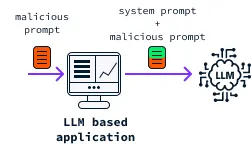

Presented by VMI Cadets--Roberts, Kelly, Poe
Prompt Injection is one of the most accessible options available to malicious users; therefore,
it is one of the most important to understand and protect against. In the context of Large Language Models,
prompt injection can be described, simply, as any attempt by the user to insert new instructions
into the model prompt rather than a legitimate input in the prompt field to lead the LLM into an unintended response.
It can be done to gather user data, remove guide rails set by system prompts to provide safe/acceptable responses,
or take over complete control of the system. Most concerningly, this can be done in natural language, such as
English, due to the nature of LLMs, which is especially alarming to professionals seeking to use AI in their businesses
because it gives every user the capability to interfere with LLM operations, inherently.

Prompt injection is a type of prompt modification attack that involves the malicious insertion of prompts
or requests in LLM-based environments that could lead to unintended actions and/or the disclosure of sensitive
or secret information. It looks and behaves in a similar manner to an SQL injection where the malicious commands
are embedded into a regular input and thus produces malicious outcomes on Language Models like ChatGPT and other LLMs.
The malicious outcomes can vary from propagation of disinformation, biased output, the exposure of private data/information
and leverage to exploit systems connected to the LLM.
Anyone using LLMs in their application should be actively working to prevent malicious users in order to protect their users’
data as well as their own assets and reputation.Developers are the first line of defense in mitigating prompt injection.
They must utilize proactive input handling practices in their code to prevent malicious actors from entering their code. Improper
input handling is like leaving the front door wide open for the mailman,dropping off a package, neighbors, dropping off a cake,
or the delivery person delivering your food. Their purpose is understood, yet any one of them might enter or leave with something
not meant for them if they become tempted, and even if they are to be trusted, criminals might feel invited to walk in and take
full advantage of your negligence. It is best to leave the door locked and address each case appropriately.
In summary, prompt injection is a very serious concern for any individual or organization seeking to utilize LLMs in their projects.
It is relatively easy to perform but it can cause catastrophic issues. Ultimately, it is important to consider and attempt to mitigate
this type of attack before using an LLM in any project by using proper input handling techniques. Now that you are aware of the possibility
and potential impact of this attack, consider how you might mitigate it on your own or read our follow up article Mitigating Prompt Injections
in LLM-Based Projects.